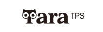

서비스기획 직무 지원자 김유진TOOLDI SERVICE PLANNING PORTFOLIO
툴디 서비스기획
포트폴리오
초기 검수 플로우 기획안과 VOC 기반 재정의 기획안을 함께 정리했습니다. 확인할 문서를 선택하면 해당 기획안으로 이동합니다.

서비스기획 직무 지원자 김유진초기 검수 플로우 기획안과 VOC 기반 재정의 기획안을 함께 정리했습니다. 확인할 문서를 선택하면 해당 기획안으로 이동합니다.